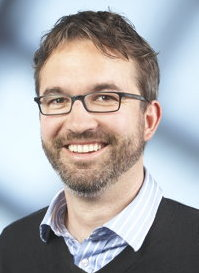
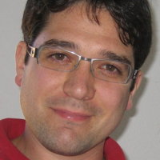

Matthias Fischmann
Dr. Matthias Fischmann hat vor 15 Jahren seine Diplomarbeit am
Max-Planck-Institut für Informatik in Haskell implementiert, und
ist seitdem überzeugter Verfechter funktionaler Programmierung.
Einige seiner jüngeren Haskell-Projekte sind ein SAP Reverse
Engineering Werkzeug und ein integriertes Framework zum Testen von
REST-APIs und Webanwendungen. Er hat an der Humboldt-Universität
in Berlin promoviert und ist zur Zeit Geschäftsführer von
zerobuzz.net.

Matthias Neubauer
Matthias Neubauer ist Software-Architekt bei der SICK AG in Waldkirch
(Breisgau). Dort befasst er sich mit dem Hardware-/Software-Codesign neuer
Vision-Sensoren. Nach Erforschung neuer Paradigmen zur Webprogrammierung
und der Entwicklung von verschiedene Testtools setzt er heute Ansätze des
funktionalen Programmierens in einem typischen C++-Umfeld ein.

Michael Sperber
Michael Sperber ist CTO der Active Group GmbH. Er
wendet seit über 20 Jahren funktionale Programmierung in
Forschung, Lehre und industrieller Entwicklung an und
hat zahlreiche Fachartikel zum Thema verfasst. Er ist
Mitorganisator der internationalen Konferenz Commercial
Users of Functional Programming und ist Mitglied im
Lenkungsausschuss der International Conference on
Functional Programming. Er ist außerdem Mitbegründer
des Blogs funktionale-programmierung.de.

Stefan Wehr
Dr. Stefan Wehr entwirft und entwickelt bei der factis research GmbH
komplexe Anwendungen und verteilte System, meistens in der
funktionalen Programmiersprache Haskell. Davor hat er sich in seiner
Promotion mit der Integration von objekt-orientierten und funktionalen
Sprachen beschäftigt.
